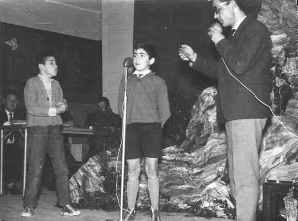

Jaime en uno de esos concursos que nos hacían para distraernos. Cree que el que está junto a él es Julio Lanchas Carrasco, el que pregunta es D. Carlos 'Pachanga' y podemos distinguir a la izquierda, en la sombra y con cara redonda a D. Patricio Mendo.
 |